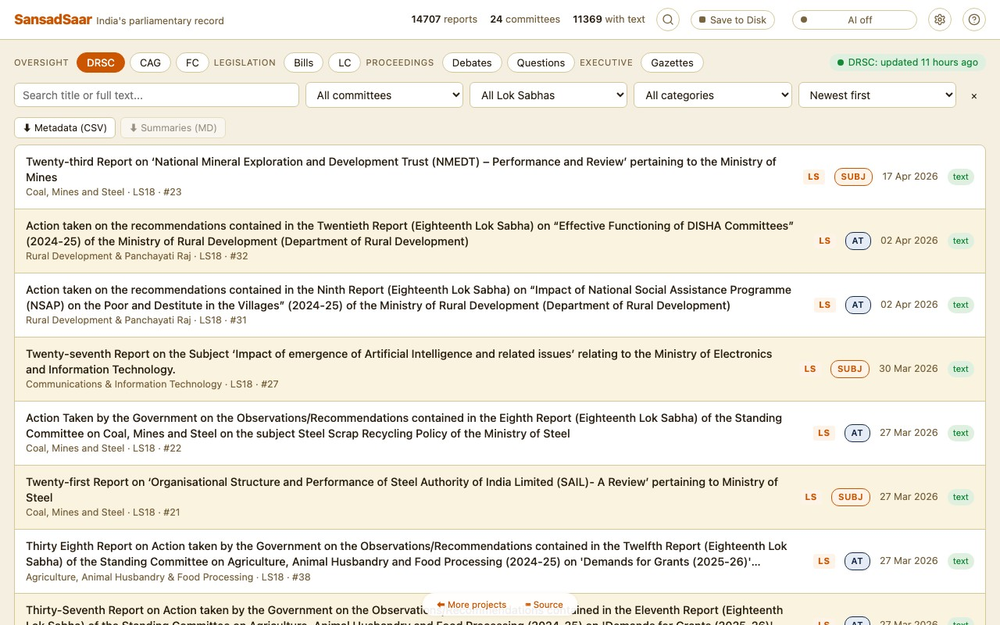
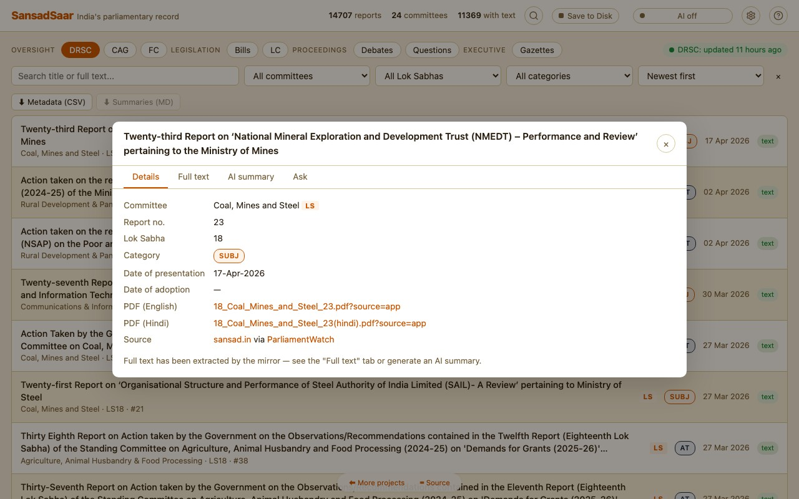
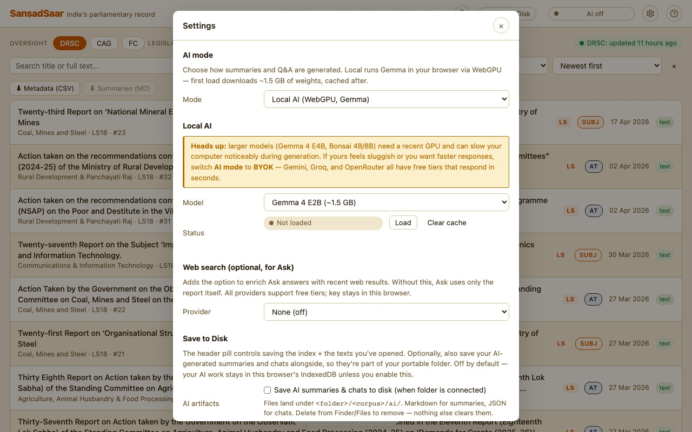
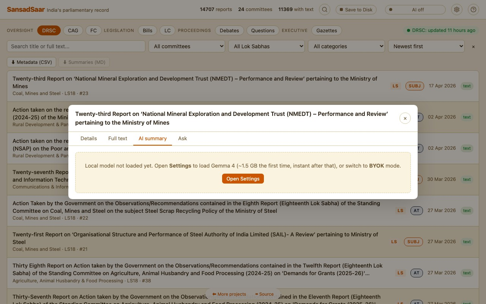
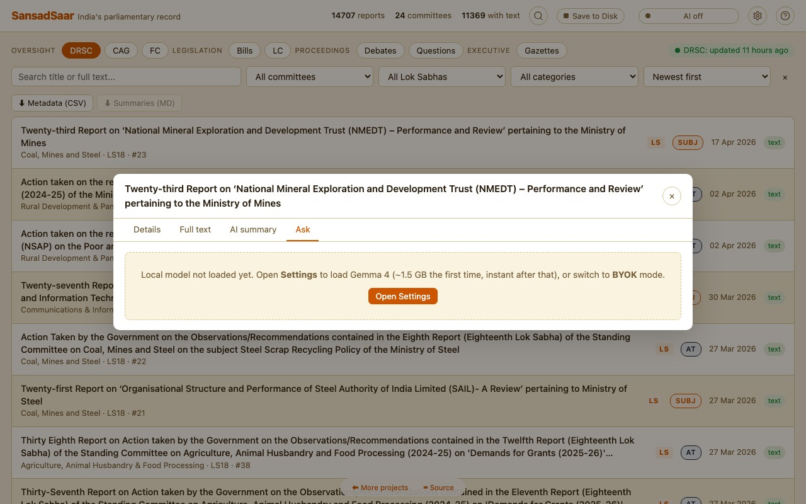
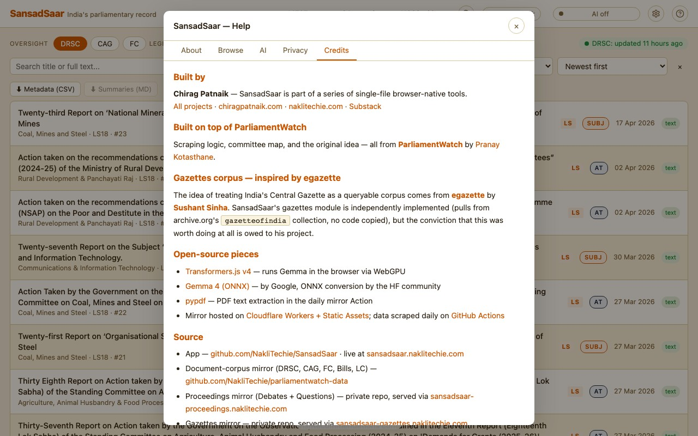

A tour of the eight corpora SansadSaar surfaces, how to set up AI, how the privacy model works, and what costs (if any) come with each option.
A single-file browser app that opens up eight corpora of India's parliamentary and executive record — searchable, filterable, and (optionally) AI-readable in the same UI. Each corpus is scraped on its own schedule by an open-source GitHub Action and mirrored as static JSON on Cloudflare Workers. The app you're using runs entirely in your browser — there is no SansadSaar server, no account, no analytics.
Three things make it different from the upstream ParliamentWatch (whose Python scraper foundation powers the oversight corpora):
The corpus chip strip near the top groups the eight datasets into four thematic buckets. Click any chip to switch the list and filter row to that corpus.
| Group | Corpus | What's in it |
|---|---|---|
| Oversight | DRSC | Reports from India's 24 Departmentally Related Standing Committees — 16 chaired by the Lok Sabha, 8 by the Rajya Sabha. The original SansadSaar corpus. |
| CAG | Audit reports published by the Comptroller & Auditor General of India. | |
| FC | Financial Committee reports — Public Accounts, Estimates, and Public Undertakings Committees. | |
| Legislation | Bills | Bills introduced or pending in Parliament, sourced from PRS Legislative Research. |
| LC | Law Commission of India reports — primary recommendations on legal reform. | |
| Proceedings | Debates | Lok Sabha and Rajya Sabha debate reports — full text where the upstream provides it. |
| Questions | Starred and unstarred parliamentary questions from both houses. | |
| Executive | Gazettes | Central Gazette of India (Weekly + Extraordinary), pulled from the archive.org gazetteofindia collection with its bilingual OCR. |
Header counts (X reports · Y with text) re-bind to whichever chip is active. The chip pill on the right ("DRSC: updated 4 hours ago") shows how fresh the mirror data is for that corpus.

Main view — top header, corpus chip strip, filters, sortable report list.
The header runs across the top:
Below the header is the corpus chip strip: eight chips grouped under four labels (oversight, legislation, proceedings, executive). The active chip is highlighted; everything below it — filter row, list, status badge — belongs to that corpus.
The filter row is corpus-aware — each corpus emits the filters that make sense for it. The shapes you'll see:
| Corpus | Filters it shows |
|---|---|
| DRSC | Search · committee (24 options) · Lok Sabha term · category (DFG, AT, SUBJ, BILL, ASSURE) · sort |
| CAG | Search · ministry · sector · year · sort |
| FC | Search · committee (PAC / Estimates / PUC) · Lok Sabha term · category · sort |
| Bills | Search · house · status · year · sort |
| LC | Search · year · sort |
| Debates | Search · house (LS / RS) · session · sort |
| Questions | Search · house · session · sort |
| Gazettes | Search · category (Extraordinary / Weekly) · ministry · language (EN / HI / EN+HI) · year · sort |
The Search box does substring match against titles by default. Open any report's Full text tab and that text becomes searchable too. To pre-fetch every extracted text for a corpus and search across its full body content, toggle Enable full-text search across <corpus> in Settings (size estimate shown — uses local cache after first fetch).
Each row also carries a status badge on the right:
Gazettes additionally carry an EN+HI badge when both English and Hindi text exist in the same record (the archive.org OCR is bilingual).

Report dialog — Details tab. PDF links go straight to sansad.in.
Click any row to open a four-tab dialog:
Click the ⚙ Settings icon in the header (or the AI status pill). Pick one of two modes:

Settings → Local AI section.
Runs an open-weight model entirely in your browser via Transformers.js on WebGPU. The first load downloads weights from Hugging Face; the browser caches them so subsequent visits are instant.
| Model | Size | Notes |
|---|---|---|
| Gemma 4 E2B | ~1.5 GB | Default. Good balance of quality and download size. |
| Gemma 4 E4B | ~4.9 GB | Stronger summaries; takes longer to download and longer per response. |
| Ternary Bonsai 1.7B | ~470 MB | Smallest download. Good for low-bandwidth or quick trials. |
| Ternary Bonsai 4B | ~1.1 GB | Sweet spot for quality vs. size on the Bonsai line. |
| Ternary Bonsai 8B | ~2.2 GB | Strongest Bonsai option. Needs a recent GPU; 64K context. |
Settings → BYOK section. Provider list mirrors upstream ParliamentWatch.
Send the request directly from your browser to the provider you choose. Your key stays in this browser's localStorage — never sent to any other server.

AI summary tab — a freshly-generated 4-section briefing.

Ask tab — chat input scoped to the open report.
Settings → Web search section.
Optional. When configured, you get a 🌐 button next to Send in the Ask tab. Clicking it does a web search first and feeds the top results into the prompt alongside the report text. Useful for "is there recent news on this?" or "has the government acted on this since the report?" style follow-ups.
| Provider | Free tier | Where to get a key |
|---|---|---|
| Tavily | 1,000 queries/month | app.tavily.com |
| Brave Search | 2,000 queries/month | api.search.brave.com |
| SearXNG (self-hosted) | Unlimited (you run it) | Use any public instance with JSON output enabled, or self-host from github.com/searxng/searxng |
https://searx.example.org).Two buttons live in the toolbar above the report list:
has_text and has_summary. Useful for dropping into Excel / a notebook for analysis.Both downloads happen client-side — nothing leaves your machine.
By default, search hits report titles. The instant you open a report's Full text tab, that body becomes searchable too — and stays cached locally forever. If you want to search across the entire corpus' body content without opening reports one-by-one, enable Deep search in Settings — independently per corpus.
SansadSaar has no server. Everything you generate stays in your browser:
localStorage, never sent except to the provider you chose.summaries. Persistent across sessions. Visible in DevTools → Application → IndexedDB → sansadlocal (legacy DB name, kept so existing data carries over).texts. Once fetched, it's there for life. On return visits, only newly-published reports get pulled from the mirror.localStorage key sansadlocal.settings.v1 (legacy key, preserved across the rename).What leaves your browser:
sansadsaar-data.naklitechie.com — DRSC, CAG, FC, LC, Bills (the document-corpus mirror)sansadsaar-proceedings.naklitechie.com — Debates + Questionssansadsaar-gazettes.naklitechie.com — Central Gazettearchive.org when you open a Gazette's "View PDF" — that's a normal external link, the app doesn't proxy.huggingface.co — model weights, only on first load of a given model.What never happens: no analytics, no accounts, no telemetry, no server logs (no server). The page is a static index.html served from Cloudflare Workers, on the custom domain.
Three layers of cost. The first is always free; the other two depend on your choice.
| Component | Cost | Notes |
|---|---|---|
| The app itself | Free | Single static index.html, served via Cloudflare Workers Static Assets. |
| Scheduled scrapers | Free | GitHub Actions free tier. Eight corpora, eight crons — hourly to daily depending on upstream cadence. |
| Data hosting | Free | Three CF Workers Static Assets deployments (document-corpus + proceedings + gazettes). Under CF's free-tier file-count and bandwidth limits. |
| Custom domain (Cloudflare) | Free | Cloudflare DNS + Workers, free tier. |
| Model | Cost | Limits |
|---|---|---|
| Gemma 4 / Ternary Bonsai (any size) | Free | Runs on your GPU. Bandwidth: one-time download, then nothing. CPU/GPU time is yours. |
| Provider | Free tier | Pay-as-you-go |
|---|---|---|
| Anthropic (Claude) | None — paid only. | ~$3/M input · $15/M output (Sonnet 4.5). A 50-page summary ≈ $0.05–$0.10. |
| OpenAI (GPT) | None on most models. Some accounts get $5 trial credit. | ~$0.15/M input · $0.60/M output (GPT-4o-mini). A summary ≈ $0.005. |
| Google Gemini | Yes. 15 req/min, 1M tokens/day free. Get a key at aistudio.google.com. | Above the free tier, ~$0.075/M input · $0.30/M output (Gemini 2.5 Flash). |
| Groq | Yes. Free tier with rate limits (~30 req/min). Inference is very fast (Llama 3.3 70B in seconds). Get a key at console.groq.com. | Pay tier available for higher rate limits. |
| OpenRouter | Yes. Free models (look for :free suffix in the model name). Get a key at openrouter.ai. |
Pay-as-you-go for premium models from many providers. |
| Ollama | Yes — fully free. Runs on your computer. Install from ollama.com, then ollama pull llama3.2. Set OLLAMA_ORIGINS=https://sansadsaar.naklitechie.com when starting Ollama so the browser can reach it. |
— |
| Custom OpenAI-compatible | Whatever your endpoint charges (or doesn't). | For self-hosted vLLM / LM Studio / Together.ai etc. |
| Provider | Free tier | Pay-as-you-go |
|---|---|---|
| Tavily | 1,000 queries/month | $10–$80/month for higher tiers. |
| Brave Search | 2,000 queries/month | From $3/CPM (1,000 queries). |
| SearXNG | Free, self-hosted | — |
chrome://gpu in Chrome.Ollama's HTTP API doesn't allow cross-origin requests by default. Set OLLAMA_ORIGINS when starting Ollama:
OLLAMA_ORIGINS="https://sansadsaar.naklitechie.com" ollama serve
If you opened the app via http://localhost:8000 for local dev, set OLLAMA_ORIGINS=http://localhost:8000 instead.
Each corpus has its own GitHub Action on its own schedule — DRSC daily, CAG / FC / LC / Bills daily, Debates 2-hourly, Questions hourly, Gazettes hourly. A new upstream record typically appears in SansadSaar within that corpus's next cycle. On a fresh visit, the latest data loads automatically; if you've linked Save-to-Disk, the staleness check picks up updates and re-syncs in the background.

Help → Credits tab. Open from the ? button in the header.
Built on top of ParliamentWatch by Pranay Kotasthane — the original DRSC scraper, committee config, and core idea are his. The Gazettes corpus shape is inspired by egazette by Sushant Sinha (independently implemented; no code copied). SansadSaar repackages all of this with on-device AI and the additional corpora. Full credit list in the Help → Credits tab.